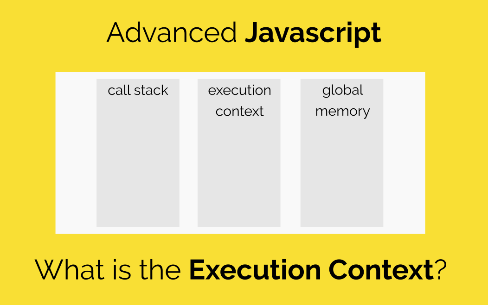

Execution Context và Execution Stack trong Javascript
Nếu bạn đã, đang và muốn trở thành 1 JavaScript Developer? Chắc chắn bạn phải học về Script Program được executed bên trong như thế nào. Việc hiểu những nội dung như execution context (exec context) và execution stack (exec stack) là rất quan trọng. Bởi vì nó giúp ta hiểu được các khái niệm khác nữa trong JavaScript như Hoisting, Scope và Closures. Việc hiểu rõ các khái niệm này sẽ khiến bạn trở thành 1 JavaScript developer giỏi hơn rất nhiều. Vậy thì ta bắt đầu tìm hiểu thôi nào!
Execution Context là gì ?
Ta hiểu đơn giản rằng, 1 execution context là 1 khái niệm trừu tượng của môi trường. Nơi mà các đoạn mã JavaScript được evaluated_và _executed. Bất kì đoạn mã nào run trong JavaScript, nó sẽ chạy bên trong exec context.
Các loại Execution Context trong JavaScript
Execution context trong JavaScript được chia thành 3 loại:
Global Execution Context- Đây là execution context mặc định hay còn là base execution context. Những đoạn code không trong bất cứ function nào sẽ được _executed_trong global execution context.
- Nó làm 2 nhiêm vụ: 1, Tạo global object - gọi là window object ( Trong trường hợp là browsers ) và thứ 2 là gắn value của this với global object này. Điều cuối cùng là chỉ có duy nhất 1 global execution context trong 1 chương trình.
Mỗi lần 1 function được invoked, sẽ có 1 execution context mới được tạo ra cho function đó. Mỗi function sẽ có execution context riêng của nó. Nhưng chỉ được tạo ra khi function được invoked hoặc được called.
Và có thể có rất nhiều *function execution context*. Bất kể khi nào 1 execution context mới được gọi. Nó sẽ trải qua 1 chuỗi các steps theo thứ tự xác định - ta sẽ thảo luận nó sau.
Eval Function Execution ContextCode mà được executed bên trong 1 eval function cũng có những execution context riêng của nó, nhưng vì eval không được sử dụng nhiều bởi các developers JavaScript, nên ta sẽ không thảo luận nó trong bài này.
+ Dưới đây là một ví dụ cụ thể:

Như hình trên, ta có một global context với viền màu tím, và 3 function contexts. Sẽ chỉ có duy nhất 1 global context, và nó có thể được truy cập sử dụng từ bất cứ context nào trong chương trình cùng source code.
Execution Stack
Execution stack còn được biết đến là “calling stack” trong các ngôn ngữ lập trình khác. Đây là 1 stack với cấu trúc LIFO ( Last in, First Out ). Được sử dụng để lưu giữ tất cả exec context đã được tạo ra trong suốt chương trình.
Khi JavaScript Engine encounter(gặp) những đoạn script của bạn lần đầu tiên. Nó sẽ tạo ra global exec context và đẩy nó vào trong execution stack hiện tại. Mỗi khi mà engine tìm được 1 function invocation, nó sẽ tạo ra 1 exec context mới cho function đó. Sau đó đẩy nó lên trên đỉnh của stack.
Engine sẽ thực thi function mà exec context ở trên đỉnh của stack trước. Sau khi function này complete nó sẽ bị đẩy ra khỏi stack. Và control sẽ đi tới context phía dưới trong stack.
Để hiểu rõ hơn ta sẽ cùng xem đoạn code phía dưới:
let abc = 'Hello World !';
function first() {
console.log('Inside first function');
second();
console.log('Again inside first function');
}
function second() {
console.log('Inside second function');
}
first();
console.log('Inside Global Execution Context');
Khi đoạn code phía trên load trong browser. JavaScript Engine tạo ra 1 global execution context rồi đẩy nó vào execution stack hiện tại. Khi lần gọi first() diễn ra, JavaScript engines tạo ra 1 execution context cho function đó và đẩy nó lên trên đỉnh của execution stack.
Đến khi second() function được gọi trong first() function, JavaScript engine lại tạo ra 1 execution context mới cho function này rồi tiếp tục đẩy nó lên trên đỉnh của execution stack. Sau khi second() function kết thúc, nó bị _pop_ra khỏi stack, và control lại đi tiếp tới execution context bên dưới - đó là first() execution context.
Cho tới khi first() function kết thúc, execution stack của nó bị xóa khỏi stack và control đi tiếp tới global execution context. Khi tất cả code được _executed_JavaScipt engine xóa gloabl execution context khỏi stack.
5 đặc điểm của execution stack cần nắm :- Xử lý đơn luồng. (single threaded)
- Xử lý đồng bộ. ( ? )
- Có duy nhất 1 Global context.
- Vô hạn function contexts.
- Mỗi function khi được gọi sẽ sinh ra 1 execution context tương ứng, ngay cả khi nó gọi đến chính nó.
How is the Execution Context create ?
Đến đây, ta đã thấy JavaScript engine đã quản lý những execution context như thế nào. Bây giờ, chúng ta sẽ tìm hiểu xem 1 execution context được tạo ra kiểu gì bởi Javascript engine.
Execution context được tạo ra qua 2 giai đoạn: 1 là Create Phase, 2 là Execution Phase.
The Create PhaseTrước khi code JavaScript được executed, execution context đi qua giai đoạn creation phase. 3 điều này xảy ra trong suốt giai đoạn creation phase là :
- Values of this được xác định, còn được gọi là This Binding.
- LexicalEnvironment component được khởi tạo.
- VariableEnvironment component được khởi tạo.
ExecutionContext = {
ThisBinding = , LexicalEnvironment = { … },
VariableEnvironment = { … },
}
This Binding
Trong global execution context, value of this tham chiếu tới global object. ( this tham chiếu tới Window Object ).
Trong functione execution context, value of this phục thuôc vào cách function được gọi như thế nào. Nếu nó được gọi bởi 1 object reference, thìa value of this được gán vào object đó, nếu không thì value of this được gán vào global object hoặc `undefined` ( in strict mode ). Ví dụ:
let person = {
name: 'Tien',
birthYear: 1995,
calcAge: function() {
console.log( 2019 - this.birthYear );
}
}
person.calcAge();
// 'this' refers to 'person', because 'calcAge' was called with 'person' object reference
let calculateAge = person.calcAge;
// console.log( typeof calculateAge );
calculateAge();
// 'this' refers to the global window object, because no object reference was given
Lexical Evironment
Lexical Environment là 1 'loại kỹ thuật' được dùng để define sự kết hợp của Identifiers tới các variables riêng biệt và những functions dựa trên lexical nesting structure of ECMAScript code. 1 Lexical Environment bao gồm 1 Environment Record và 1 biến null có thể tham chiếu tới Lexical Environment bên ngoài.
Ta hiểu đơn giản như sau: Lexical environment là 1 cấu trức giữ **identifier-variable mappng** (ở đây **dentifier** tham chiếu tới tên của variables/function, và **variable** là 1 tham chiếu tới những actual object. [bao gồm function type object] hoặc [primitive value])
Trong Lexical Environment, được chia ra thành 2 components: (1) environment record và (2) là 1 reference to outer environment
- Environment record là 1 nơi mà variable và function declaration được lưu trữ.
- Reference to the outer environemt có nghĩa là nó truy cập tới lexical environment bên ngoài của nó.
Lexical environment lại được chia tiếp ra thành 2 loại:
- Global environment (trong global exec context) là 1 Lexical Environment - không có outer environment. Outer environment là null. Nó có global object (window object) và những methods hay properties.
- (vd. array methods) bên trong environment record như các variables được dùng định nhĩa. Và value of this sẽ tham chiếu tới global object.
- Function environment: Tại đây, các variables được định nghĩa bên trong function sẽ được lưu giữ tại environment record. Sự tham chiếu tới outer environemt có thể là global environment hoặc 1 outer function environemt đang chứa inner function
Với function environment, environment record còn chứa 1 arguments object mà nó contain mapping giữa các index và các argument được truyền vào function và length number của những arguments đó nữa. Ví dụ 1 argument object của function phía dưới được thể hiện như sau:
Trong environment record lại được chia tiếp ra thành 2 loại:
- Declarative environment record: lưu trữ những variables, functions, và các parameters. 1 function environment chứa declarative environment record.
- Object environment record: dùng để xác định mối liên kết giữa những variable và function xuất hiện trong global execution context. 1 global environment chứa object environment record.
1 cách trừu tượng, lexical environment sẽ được biểu diễn như sau:
GlobalExectionContext = {
LexicalEnvironment: {
EnvironmentRecord: {
Type: "Object",
_// Identifier bindings go here_ }
outer:
}
}
FunctionExectionContext = {
LexicalEnvironment: {
EnvironmentRecord: {
Type: "Declarative",
_// Identifier bindings go here_ }
outer:
}
}
Variable Environment:
Nó cũng được coi là Lexical Environment. Bên cạnh đó, Environment record của nó sẽ giữ những bindings được tạo ra bởi các VariableStatements trong exec context.
Như đã nói bên trên, variable environment cũng là 1 lexical environment. Vì thế nó cũng có những properties của 1 lexical environment.
Trong ES6, 1 điều khác biệt giữa LexicalEnvironmet component và VariableEnvironment là “the former” được sử dụng để lưu giữ function declaration và các variables ( let và const ), sau này thì nó chỉ được dùng để lư giữ variable ( var ) bindings thôi.
Đoạn code bên dưới sẽ làm rõ những gì chúng ta vừa thảo luận bên trên:
let a = 20;
const b = 30;
var c;
function multiply(e, f) {
var g = 20;
return e * f * g;
}
c = multiply(20, 30);
The exec context sẽ được biểu diễn như sau:
GlobalExectionContext = {
ThisBinding: ,
LexicalEnvironment: {
EnvironmentRecord: {
Type: "Object",
// Identifier bindings go here
a: < uninitialized >,
b: < uninitialized >,
multiply: < func >
}
outer:
},
VariableEnvironment: {
EnvironmentRecord: {
Type: "Object",
// Identifier bindings go here
c: undefined,
}
outer:
}
}
FunctionExectionContext = {
ThisBinding: ,
LexicalEnvironment: {
EnvironmentRecord: {
Type: "Declarative",
// Identifier bindings go here
Arguments: {0: 20, 1: 30, length: 2},
},
outer:
},
VariableEnvironment: {
EnvironmentRecord: {
Type: "Declarative",
// Identifier bindings go here
g: undefined
},
outer:
}
}
Chú ý
Function exec context chỉ được tạo ra khi lời gọi multiplyfuncton được encountered.
Như bạn thấy, let và const variables được định nghĩa những lại không có bất kì value assoiated nào, nhưng khi var variables được định nghĩa thì lại được gán là undifined.
Lý do là vì trong suốt quá trình creation phase, các mã code của ta sẽ được scanned cho các variable và function declarations, trong khi function declaration được lưu giữ trong environment của riêng nó, thì các variables được khởi tạo lại được gán là undefined (trong trường hợp var) hoặc là uninitialized (trong trường hợp let và const).
Đó là lý do vì sao bạn có thể truy cập những var variables được defined trước khi mà chúng được declared (mặc dù vẫn là undefined) nhưng bạn sẽ gặp phải lỗi tham chiếu khi truy cập các let và const variables trước khi chúng được declaraed.
This is, what we call hoisting. Execution phaseĐây là phần đơn giản nhất trong bài. Trong giai đoạn này, khi các assignments tới tất cả các variables đã xong. Lúc đó, mã code của chúng ta sẽ được executed.
Chú ý* - Trong suốt giai đoạn execution*, nếu Javascript engine không thể tìm thế value of let variable mà đã được daclared trong source code, nó sẽ gán value đó là undefined
Conclusion ConclusionVậy là chúng ta đã cùng thảo luận chương trình JavaScript được executed bên trong ra sao. Bạn không cần phải học hết tất cả các khái niệm trên để trở thành 1 JavaScript developer giỏi. Nhưng việc hiểu được những khái niệm này sẽ giúp bạn rất nhiều. Bạn sẽ dễ dàng học sâu hơn về các khái niệm khác như Hoisting, Scope, Closures.
Hoisting Javascript

Hoisting là một khái niệm khá hay trong JavaScript tuy nhiên lại ít được mọi người để ý do nó có đôi chút phức tạp cũng như mọi người ít quan tâm đến cách thức hoạt động bên trong ngôn ngữ lập trình. Trong bài viết này mình, mình sẽ chỉ ra khái niệm cũng như cách thức hoạt động bên trong. Do kiến thức còn hạn chế nhiều nên sẽ có nhiều lỗi, mong các bạn góp ý để mình hoàn thiện kiến thức.
Một số khái niệm cần nắm
JavaScript has function-level scopeHãy xem đoạn code bằng C sau:
#includeint main() { int x = 1; printf("%d, ", x); // 1 if (1) { int x = 2; printf("%d, ", x); // 2 } printf("%d\n", x); // 1 }
Kết quả nhận được lần lượt là 1, 2, 1 bới vì họ hàng nhà C có thuộc tính block-level scope, vì thế trong đoạn lệnh if, một scope mới được tạo ra, biến x được tạo ra trong scope mới mà không ảnh hưởng tới biến x nằm ở scope bên ngoài.
Tuy nhiên, với JavaScript :
var x = 1;
console.log(x); // 1
if (true) {
var x = 2;
console.log(x); // 2
}
console.log(x); // 2
Hoisting of variables ?
Hoisting là hành động mặc định của Javascript, nó sẽ chuyển phần khai báo lên phía trên top Trong Javascript, một biến (variable) có thể được khai báo sau khi được sử dụng
#ex1:
console.log( a );
Kết quả không có gì lạ: raise lỗi a is not define, bởi biến a chưa được khai báo ở đâu cả
#ex2:
console.log( a );
a = ' Hello hoisting';
Ví dụ này có vẻ phức tạp hơn ví dụ trên "rất nhiều" nhưng kết quả vẫn chỉ có một: a is not define
#Ex3:
var a;
console.log(a);
Output sẽ là undefined vì a đã được khai báo nhưng vẫn chưa được gán giá trị
#Ex4: console.log(a); var a;
Thật tình cờ và thật bất ngờ, kết quả ra trùng với Ex3, đều là undefined Tại sao lại như vậy ???
#Ex5 console.log(a); var a = 'Hello Hoisting' #Output = ???
Kết quả sẽ được diễn giải theo sơ đồ sau:

Giải thích:
- Trình biên dịch của Javascript sẽ phân tách phần var a = 'Hello Hoisting' thành 2 phần là khai báo và gán giá trị Khai báo: var a Gán giá trị a = 'Hello Hoisting'
- Theo Hoisting, Javascipt sẽ chuyển phần khai báo lên trên top. Vì vậy, sẽ chỉ có phần khai báo được chuyển lên trên top, còn phần gán giá trị vẫn giữ nguyên thứ tự nên vẫn ở dưới Vậy nên Output sẽ là undefined
Hoisting of function ?
Trình biên dịch Javascript sẽ chuyển phần khai báo lên trên top giống như cách làm với biến. Ví dụ 6:
say_something('YOLO');
function say_something(a){
console.log(a);
}
Output cũng giống như với phần biến YOLO
#Ex7:
do_something();
function do_something(){
console.log(a);
var a = 'fly';
}
Kết quả sẽ được diễn giải theo sơ đồ sau:

Giải thích:
- Cũng giống như với phần 1, phần bên trong của hàm do_something cũng được trình biên dịch sử dụng hoisting.
- Nhưng phần khai báo chỉ được chuyển lên trên top của hàm do_something chứ không phải của chương trình
Vậy nên, Output sẽ là undefined
Hoisting function vs Hoisting variable
Trình biên dịch Javascript sẽ chuyển phần đinh nghĩa của hàm trước phần khai báo của biến Ví dụ 8:
var show_me;
show_me();
function show_me() {
console.log('Money');
}
show_me = function() {
console.log('Diamond');
}
Theo định nghĩa trên, output sẽ là Money
Những hàm khai báo sau nếu trùng tên sẽ ghi đè lên hàm khai báo trước
var show_me;
show_me();
function show_me(){
console.log('Money');
}
show_me = function(){
console.log('Diamond');
}
function show_me(){
console.log('Gem');
}
Output sẽ là Gem